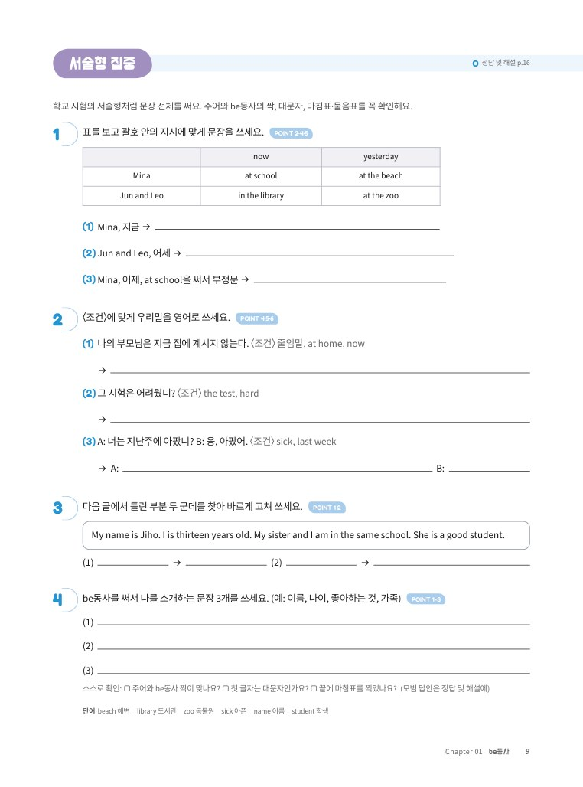
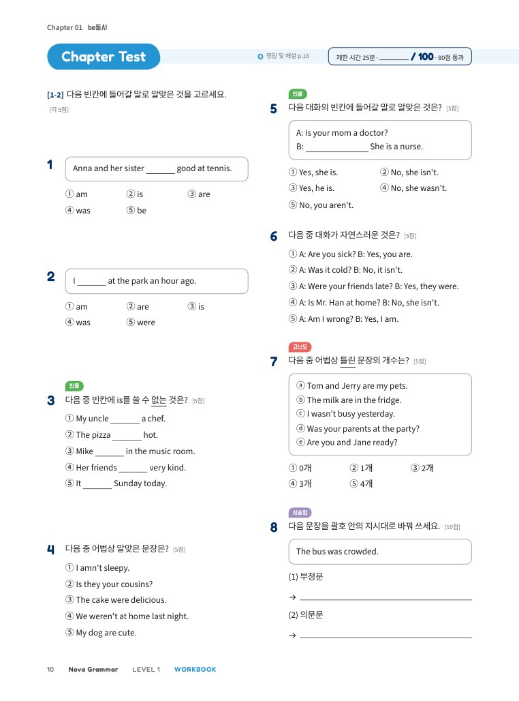

중학 영문법 · 개념부터 내신까지
NovaGrammar
LEVEL1중1
WORKBOOK
본책으로 배운 POINT를 한 번 더 연습하는 워크북
Unit별 추가 연습서술형 집중Chapter Test 12회총괄평가 3회
NOVA ENGLISH워크북 · 별책
한 번 더 풀면
내 것이 돼요
본책 Unit Exercise를 통과했다면 워크북으로 한 번 더!
같은 POINT를 다른 문장으로 다시 풀며
학교 시험에 나오는 유형까지 대비해요.
1Unit별 추가 연습
본책 Unit마다 고르기·빈칸·고쳐 쓰기·영작을 단계별로 더 풀고, 80% 통과 기준으로 스스로 점검해요.
2서술형 집중
표 보고 쓰기, 〈조건〉 영작, 글 속 오류 고치기처럼 학교 서술형 시험의 유형을 모아 연습해요.
3Chapter Test 12회
Chapter마다 객관식과 서술형 14문항, 100점 만점으로 실력을 확인해요.
4총괄평가 3회
4개 Chapter가 끝날 때마다 28문항 실전 시험으로 배운 내용을 한꺼번에 정리해요.
미리 보기
 Unit 연습
Unit 연습
서술형 집중
Chapter Test 총괄평가
총괄평가구성워크북 158쪽총괄평가 3회정답 및 해설은 별책
Nova Grammar LEVEL 1중학 영어 1학년 문법 · 워크북